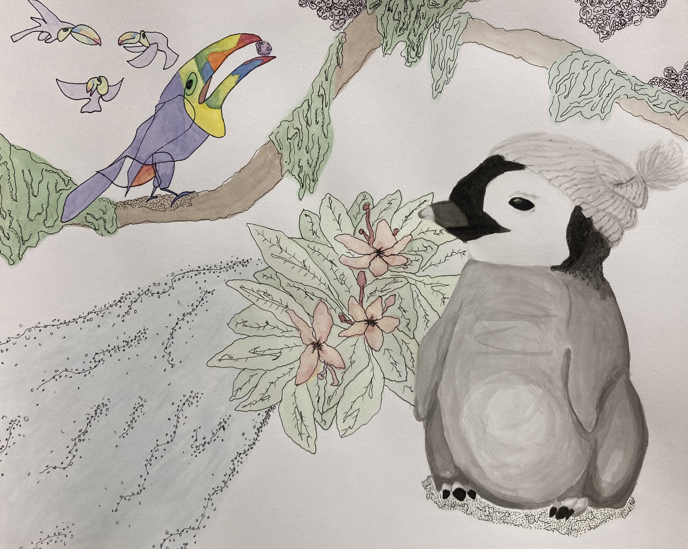

Home
Watercolour, Ink, Charcoal
I doodled a silly little penguin wearing a hat in my sketchbook one day, and that little guy turned into this piece. I laid down some charcoal before going in with ink to create some texture for the penguin's head, and rendered it fairly realistically. I used loose, expressive lines and a bunch of colours for the environment and toucans to create contrast.
Space Jellyfish
Acryllic Paint on Canvas
I created a photobashed reference using images I collected from The Internet, and then painted it. I've never made jellyfish before this, certainly not glowing jellyfish, and it was actually very soothing to paint. Very neat stuff.

Amatonormativity Collage
Magazine Cutouts and Glue
Inspired by the work of Hannah Hoch, I created this collage using pieces from an assortment of magazines. This was my first collage.